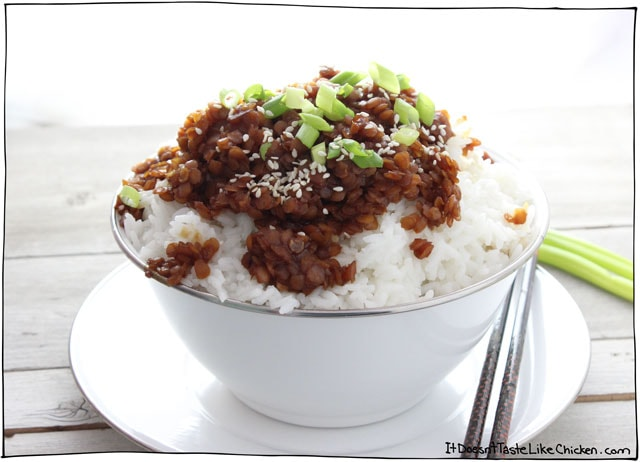

Korean Lentils

Description
A serious nod to Korean BBQ, these lentils are sweet, mildly spiced, and only take 15 minutes to make!
Ingredients
For the sauce
- 2 cups water
- ¼ cup soy sauce (or gluten free tamari)
- 2-3 tablespoons brown sugar
- 2 cloves garlic, minced
- 1 inch piece of ginger, minced
- 1 teaspoon sesame oil
- ½ teaspoon crushed red pepper flakes
For the Lentils
- 1 tablespoon light oil
- ½ yellow onion, chopped
- 1 cup red lentils
- 2 green onions, chopped
- 1 tablespoon sesame seeds
- Cooked rice for serving
Steps
- In a medium bow, mix together all the sauce ingredients.
- Heat the oil in a skillet over medium heat, then add the onion and sauté for a few minutes until the onion softens and begins to brown. Now add the lentils and the sauce. Cover and bring to a gentle simmer until the lentils are cooked and tender, and most of the liquid is absorbed, about 8 to 10 minutes.
- Serve by spooning over rice, and garnishing with the green onions and sesame seeds.